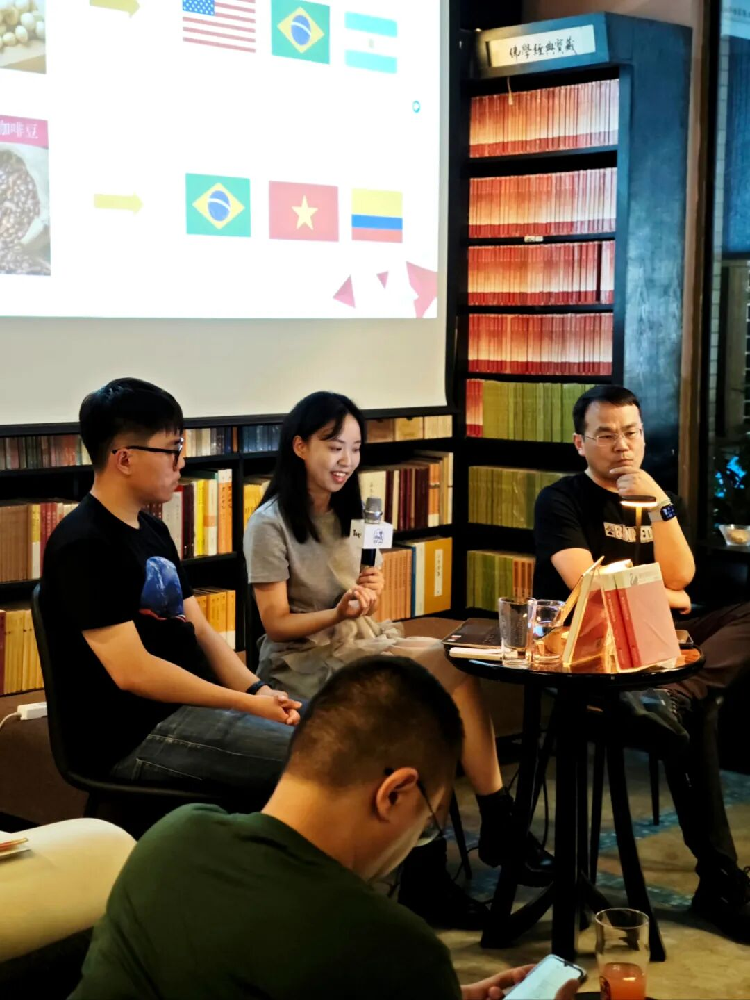
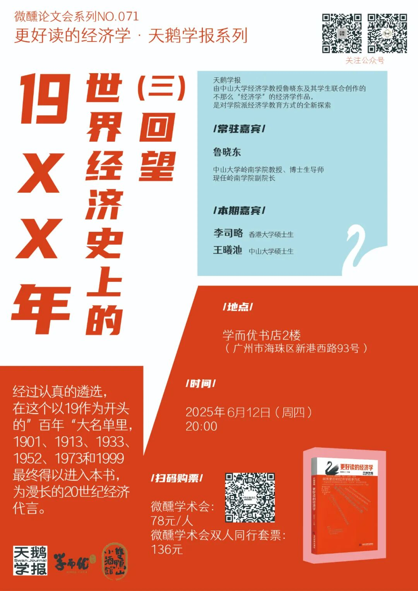
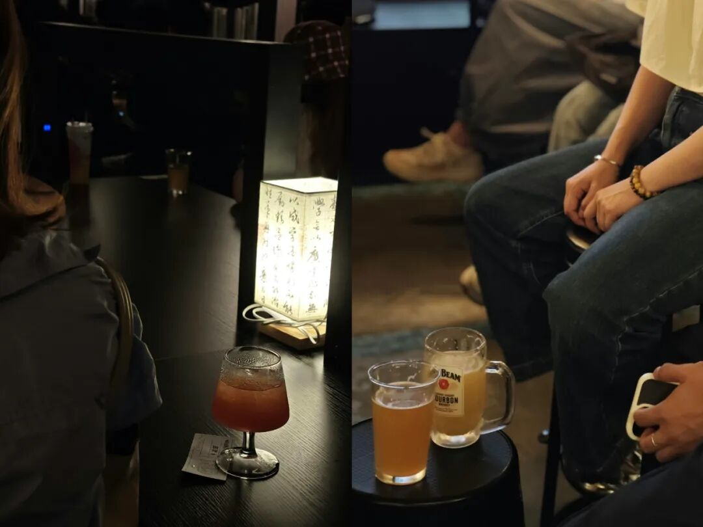
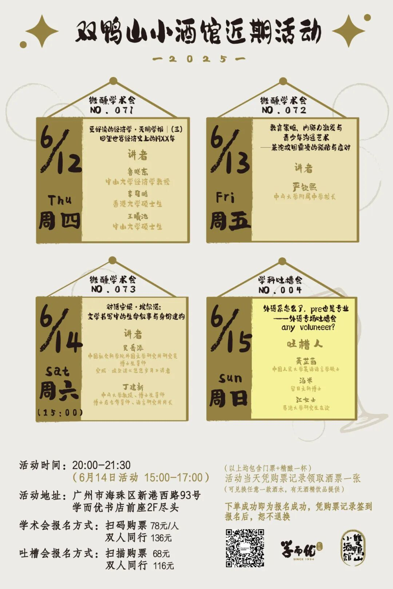

天鹅学报03期
微醺学术会071
20世纪是经济史上离我们最近的⼀个世纪，当前全球经济的最新变化都是上⼀个百年⻓期孕育的结果。
在这一个百年，⼈⼝、科技、资源、制度等等发展的要素都曾经历深刻的变⾰。如果说历史是⼀⾯镜⼦，那么20世纪的历史则是最清晰的那⼀个。
这一专题的构思使用一种可以称为“节点思考法“的“治史”⽅法，尽管历史都是连续的，但是仍然有些年份在经济史发挥着超乎寻常的作用，20世纪的很多年份均具有这样的节点意义。
站在21世纪的经济丛林中，回望经济史上离我们最近的这一个百年。当剥离那些“漫长的无为时光”后，我们会发现有六个年份脱颖而出。它们就像铆钉一样，定义了20世纪的方位。如果我们逐步缩小光圈，由近及远地观察这一面最清晰的历史之镜，就会从中发现今天的自己。

本次活动基于中山大学师生共同创作的《更好读的经济学·天鹅学报》一书的专题四——《回望世界经济史上的19XX年》。
经过认真的遴选，在这个以19作为开头的”百年“大名单里，1901、1913、1933、1952、1973和1999最终得以进入本书，为漫长的20世纪经济代言。
6月12日(周四)晚20:00，一起聊聊。

新的一周，一起来微醺下~
双鸭山小酒馆本周活动预告

活动详情如下
****
**微醺学术会071
更好读的经济学·天鹅学报 |（三）
回望世界经济史上的19XX年
-讲者-
鲁晓东
中山大学经济学教授
李司略
香港大学硕士生
王曦池
中山大学硕士生
-时间-
2025.6.12（周四）
20:00**
微醺学术会072
教育策略、内驱力激发与青少年沟通艺术
——兼论校园霸凌的预防与应对
-讲者-
严钦熙
中山大学附属中学校长
-时间-
2025.6.13（周五）
20:00
微醺学术会073
对话安妮·埃尔诺：
文学书写中的生命叙事与身份建构
-讲者-
吴岳添
中国社会科学院外国文学研究所研究员
博士生导师
安妮·埃尔诺《悠悠岁月》译者
丁建新
中山大学教授、博士生导师
博士后合作导师、语言研究所所长
-时间-
2025.6.14（周六）
15:00
（请留意时间）
学科吐槽会004
外语系怎么了？pre也是专业
——外语专场吐槽会
any volunteer?
-吐槽人-
萧芷茵
中国人民大学英语语言学硕士
汤米
留日文科博士
江女士
香港大学研究生在读
-时间-
2025.6.15（周日）
20:00
-参与方式-
****
扫码购票
微醺学术会：
78元/人
微醺学术会双人同行套票：
136元
学科吐槽会：
68元/人
学科吐槽会双人同行套票：
116元
（以上人均包含门票+精酿一杯）
（可兑换全场任意一款酒水，有无酒精饮品提供）
下单成功即为报名成功
现场凭购票记录签到
报名后，恕不退换
-地点-
广州市海珠区新港西路93号
学而优书店前座2F尽头